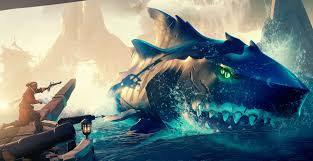
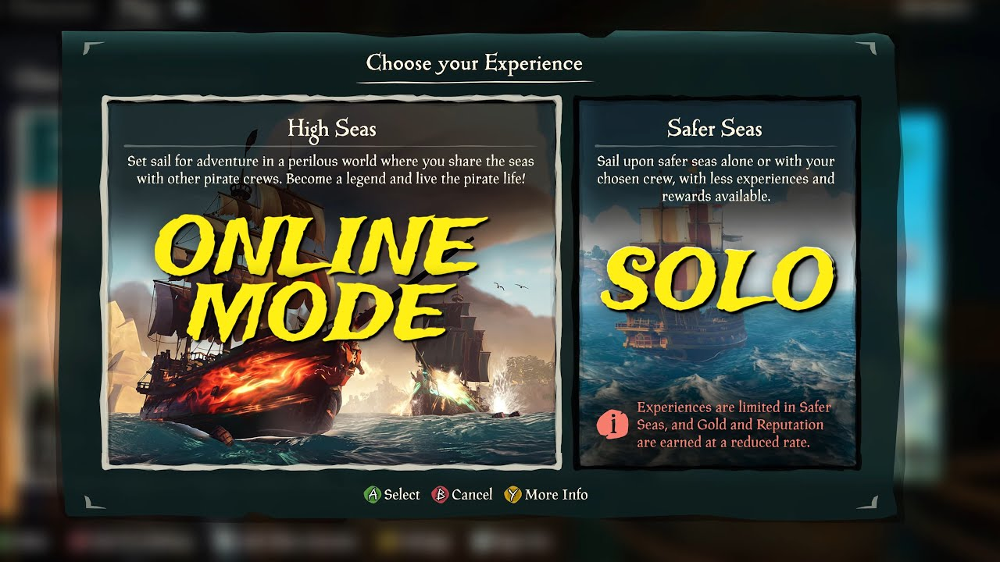

Sea Of Thieves
What is Sea Of Thieves?
Sea Of Thieves is an action/adventure game putting you in the shoes of a pirate. The game is set in a world with exotic lands containing bountiful treasure by which the player's ultimate goal is to find and sell said treasure. The game feautures many different role playing options such as steering the ship, manning the cannons, repairing the ship, or a jack of all trades. The game is said to have one of the most welcoming communities in gaming, however, this statement can vary depending on your circumstances.
Single/Multiplayer Options
Sea Of Thieves is now available on PC, Xbox, and Playstation allowing the player to squad up with fellow pirates across all platforms. The game offers players two options when starting the game. Option 1 is called "High Seas", where the player can battle other online players from around the world and compete for the ultimate score. Option 2 is called "Safer Seas" where the player is resctricted from meeting other online players. As it may sound more safe, players are still challenged by NPC (non-playable character) ships who if not taken down can cause the players ship and their treasure aboard to perish.
